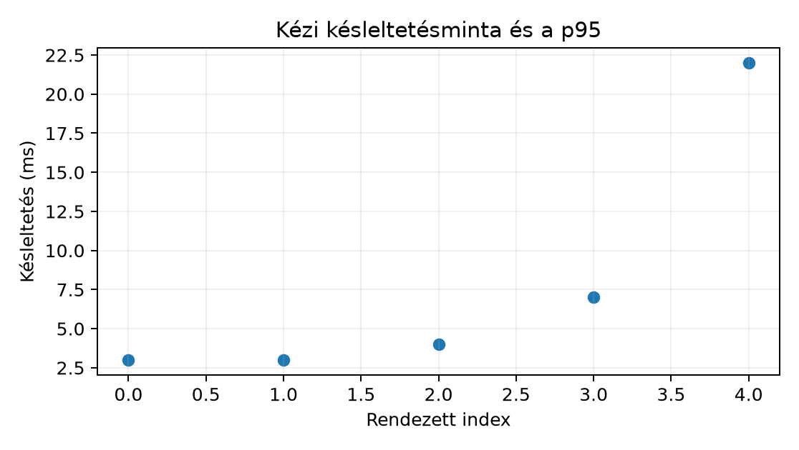

Belépő · szint: haladó · idő: 90 perc · eszköz: FastAPI, Docker
Előfeltétel: 35.3. alfejezet · Célkészség: Kiadás, visszaállítás és terhelési próba · Kimenet: projektartefaktum és ellenőrzött futtatási jegyzőkönyv.
A 35.2. alfejezet FastAPI-szolgáltatás implementálva van, a jelölt modell pedig átment a 31.4. alfejezet jóváhagyási lépésén, és a döntési küszöbét a 23.4. alfejezet módszere szerint befagyasztottuk. Most az a kérdés, miként válik a jelöltből éles, champion szolgáltatás úgy, hogy hiba esetén azonnal vissza tudjunk állni egy korábbi verzióra, és milyen elfogadási feltételeket kötünk a terheléshez.
POST /predict, A
Northstar-szerződés nyolc rendeléskori feature-e; itt most a betanított
modell kérés-sémája.probability, a
decision és a kiszolgáló modell verziója.A release két kaput érint: a kiszolgálási kapu a processz
életét, a sémát és a késleltetést ellenőrzi; a modellminőségi
kapu a predikció tudományos tulajdonságait. A kettőt szándékosan
különválasztjuk: egy zöld /health még semmit nem mond
arról, hogy a modell jól jósol-e.
A verziópin (version pin) azt jelenti, hogy az éles szolgáltatás minden rétegét egyetlen azonosítható, megváltoztathatatlan állapotra rögzítjük. A modellfájl, a kód, a bemeneti séma, a függőségi zár és a döntési küszöb együtt alkotja a releaset. Ha bármelyik megváltozik, az új release azonosítót kap.
# release_tools.py -- vázlat, a könyv generálása nem futtatta
import hashlib
import json
from pathlib import Path
def sha256_hex(path: Path) -> str:
"""A fájl tartalmából számított SHA-256 hash hex alakban."""
h = hashlib.sha256()
h.update(path.read_bytes())
return h.hexdigest()
def build_manifest(model_file: Path, schema: str, threshold: float,
code_commit: str, deps_lock: str = "uv.lock") -> dict:
return {
"release": "northstar-inference-1.4.0",
"model_file": str(model_file),
"model_hash": "sha256:" + sha256_hex(model_file),
"code_commit": code_commit,
"schema_version": schema,
"decision_threshold": threshold,
"deps_lock": deps_lock,
"created_at": "2026-07-01T12:00:00Z", # a bélyeget a CI tölti ki
}A SHA-256 kriptográfiai kivonat: ugyanaz a bájtsorozat ugyanazt a 64 hexadecimális karakterből álló lenyomatot adja; már egy bájtnyi változás is nagy valószínűséggel eltérő lenyomatot eredményez. A hash-egyezés önmagában nem igazolja a forrás hitelességét: a várt értéknek megbízható, lehetőleg aláírt csatornából kell származnia. A manifestet verziózott tárolóba írjuk, és a 31.4. alfejezet registry-bejegyzésére mutat. A manifest nem bizonyítja a modell minőségét, és önmagában a build reprodukálhatóságát sem: ellenőrizhető fájlazonosságot és a reprodukáláshoz szükséges hivatkozásokat rögzíti. A reprodukálhatóságot külön, tiszta környezetes újrafuttatás igazolja.
A betöltésnél a hashegyezést is ellenőrizzük, mert a 31.4. alfejezetben már láttuk: ismeretlen joblib-fájlt nem töltünk be:
def load_verified(path: Path, expected_hash: str):
actual = "sha256:" + sha256_hex(path)
if actual != expected_hash:
raise RuntimeError(f"hash mismatch: {actual} != {expected_hash}")
import joblib
return joblib.load(path)A health ellenőrzés csak annyit mond: a processz él. A readiness azt mondja: a processz kész kérést kiszolgálni. Indítás után a modell betöltése ideig-óráig tarthat; addig a health már 200-as, a readiness viszont még hibát ad.
from fastapi import FastAPI, HTTPException
app = FastAPI()
MODEL = None # startup_load tölti be a s138 szerint
@app.get("/health")
def health():
return {"status": "ok", "version": "northstar-inference-1.4.0"}
@app.get("/ready")
def ready():
if MODEL is None:
raise HTTPException(status_code=503, detail="model_not_loaded")
return {
"ready": True,
"model_hash": MODEL.meta["hash"],
"schema_version": MODEL.meta["schema"],
}A működési szabály: a terheléselosztó a /ready-t
pollozza, és csak HTTP 2xx válasznál tekinti késznek a példányt, mielőtt
forgalmat enged a node-ra. A /health a
processz-újraindításhoz, a /ready a forgalom szétosztásához
tartozik. A diagnózisnál a kettő együtt adja a képet: ha a health zöld,
de a ready piros, a modell nem töltődött be.
A champion–challenger váltás fokozatos. A shadow üzemmódban a challenger a valódi bejövő forgalom másolatán végigfut, de a választ továbbra is a champion adja. Tároljuk a challenger predikciós score-jait, hibáit és késleltetését anélkül, hogy a felhasználó döntését befolyásolná. A canary üzemmódban a forgalom kis, előre rögzített hányadát már a challenger szolgálja ki.
| Üzemmód | Válasz forrása | A challenger szerepe |
|---|---|---|
| shadow | champion | mérik a challengert; nem hat a döntésre |
| canary | challenger | valódi forgalmat kap, azonnali visszavonás mellett |
A canary elfogadási feltételét előre rögzítsük, például: 1000 canary-kérésen a hibaarány ≤ 1%, és a p95 ≤ a champion 1,2-szerese. A döntéskor figyeljünk a mintavételi véletlenre is. Ha az elfogadási hibahatár 1%, akkor 1000 kérésnél a hibák száma , a várható értéke hiba, a szórása pedig
A 0,95 közelítő tartomány így hiba. Ha 17 hibát látunk, az jelzés értékű, ha 10-et, az még nem bizonyíték a túllépésre. A canary rövid ablakán a modell statisztikai minőségét érett címkék nélkül nem tudjuk megbízhatóan megítélni. A shadow futás a modell különböző bemeneteken mutatott viselkedését és a késleltetést ellenőrzi, de címkék nélkül nem bizonyítja a prediktív minőségét; a canary elsődlegesen a szolgáltatási megbízhatóság kapuja.
A rollback egy adminisztratív pointer-váltás a registry-ben:
az active.json egy korábbi jóváhagyott modellre mutat. Maga
a modell-bináris verziózott artefaktum marad; a szolgáltatás a pointert
olvassa.
from pathlib import Path
import json
def load_active_model(registry_dir: Path):
pointer = json.loads((registry_dir / "active.json").read_text())
model_file = registry_dir / pointer["file"]
return load_verified(model_file, pointer["hash"])A rollback feltételeit előre rögzítjük, mert a hibánál nincs idő döntéshozatali vitára. Azonnali visszaállítási ok: az éles hibaarány átlépi az 1%-ot, a séma nem fogadja a bejövő kéréseket, vagy a késleltetés tartósan az elfogadási sáv fölé megy. A modellminőségi romlás viszont gyakran csak késői címkével értékelhető; ott előbb a shadow metrikákat vetjük össze az offline teszttel, és a döntést a review-ra kötjük. A rollback tehát nem a statisztikai következtetés pótlója, hanem a szolgáltatási kapu eszköze.
A load budget az a terhelési keret, amelyen belül a szolgáltatásnak teljesítenie kell. Egy CPU-s modellnél nem elég egyetlen átlagos kérés idejét mérni, mert a felhasználó a késleltetés farkát tapasztalja. A 13.2. alfejezetben látott kvantilist használjuk: rendezzük a mért késleltetéseket
és a rendű mintakvantilis
ahol a minta elemszáma, , a késleltetés mértékegysége ms. Ez a közelítés konzisztens a gyakran használt rendezett index-szabállyal; más könyvtárak interpolálnak, ezért a jegyzőkönyvben a módszert is rögzítjük.
Kézi kontroll: legyen a rendezett minta
ms,
.
A kvantilis értéke a választott definíciótól függ. A
szokásos, a legközelebbi rangon alapuló empirikus p95 itt
ms (1-től indexelve). A NumPy alapértelmezett, lineárisan interpolált
np.quantile([3, 3, 4, 7, 22], 0.95) értéke
ms. Az egyszerű
indexelésből adódó
ms nem tekinthető definíciófüggetlen p95-nek. Ötelemű
mintából a 95. percentilis bizonytalan és érzékeny a legnagyobb
megfigyelésre; ezért a becslési módszert és a mintanagyságot mindig
közöljük.

A helyi mérés szekvenciális, egyetlen klienssel:
# latency_probe.py -- vázlat, a szolgáltatásnak futnia kell egy másik terminálban
import json
import time
import urllib.request
PAYLOAD = {"distance_km": 12.0, "priority_flag": 0, "basket_minor": 3200,
"quantity_sum": 4, "account_age_days": 110, "segment": "consumer",
"region": "north", "acquisition_channel": "search"}
def one_request() -> float:
data = json.dumps(PAYLOAD).encode()
req = urllib.request.Request(
"http://127.0.0.1:8000/predict", data=data,
headers={"Content-Type": "application/json"})
t0 = time.perf_counter()
with urllib.request.urlopen(req.with_method("POST")) as resp:
resp.read()
return time.perf_counter() - t0
def quantile(xs: list[float], p: float) -> float:
xs = sorted(xs)
k = int(p * (len(xs) - 1))
return xs[k]
lat = [one_request() for _ in range(200)]
print({"n": len(lat), "p50_ms": round(quantile(lat, 0.50), 3),
"p95_ms": round(quantile(lat, 0.95), 3),
"p99_ms": round(quantile(lat, 0.99), 3)})A futtatás platformja: Linux/macOS vagy Windows PowerShell, a
projektgyökér northstar-inference. Elindítás egyik
terminálban:
# Linux/macOS, projektgyökér: northstar-inference
uv run uvicorn app.main:app --port 8000Szemléltető várt output, nem mért jegyzék:
n=200, p50≈4 ms, p95≈12 ms, p99≈30 ms. A tényleges értéket
a szolgáltatás, a gép és az operációs rendszer együtt adja. A
szekvenciális kliens a kis terhelésű késleltetést méri, nem a
kapacitást. A valódi terhelési próbát explicit tervként jelöljük:
párhuzamos kliens 10 szálon, 10 000 kérés, a p95/p99 mérés, a
memóriagörbe rögzítése, és az eredmény minden értékét a jegyzőkönyvbe
menteni. Ennek végrehajtása ebben a szakaszban nincs elvégezve.
A kiadás előtt két, egymástól független kaput kell lezárni. A terhelési kapu a szolgáltatás viselkedését méri; a rollback-kapu azt bizonyítja, hogy a korábbi modellre visszaállva ugyanazokat az ismert kimeneteket kapjuk.
A terhelési küszöbök előre rögzítettek (a példaértékek a helyi környezetre vonatkoznak, nem általános ígéretek):
| Metrika | Küszöb | Mérés |
|---|---|---|
| Átviteli sebesség | ≥ 50 kérés/s | 10 szál, 10 000 kérés, 3 futás mediánja |
| p95 késleltetés | ≤ 25 ms | ugyanaz a mérés |
| p99 késleltetés | ≤ 50 ms | ugyanaz a mérés |
| Hibaarány | ≤ 1% | HTTP 4xx/5xx és timeout együtt |
| Memóriacsúcs | ≤ 512 MiB | resource.getrusage / folyamatfigyelő |
| Cold start | ≤ 5 s | modellbetöltés + /ready 200 |
A mérési jegyzőkönyv rögzíti a hardvert, a worker-számot, a Python/csomagverziókat, a payloadot és a pontos percentilis-definíciót. Ha bármelyik küszöb megsérül, a release no-go; a canary csak a küszöbök teljesülése után indulhat.
A rollback-próba lépései:
active.json pointert a régi modellre állítjuk, a
szolgáltatást újraindítjuk, a /ready a régi hash-t és sémát
jelenti.model_version mezője a régi verzió
kell legyen.def release_gate(m):
errors = []
if m["throughput_rps"] < 50:
errors.append("throughput")
if m["p95_ms"] > 25:
errors.append("p95")
if m["p99_ms"] > 50:
errors.append("p99")
if m["error_rate"] > 0.01:
errors.append("error_rate")
if m["peak_mb"] > 512:
errors.append("memory")
if m["cold_start_s"] > 5:
errors.append("cold_start")
return errors
def rollback_check(expected_hash, active_hash, old_outputs, got_outputs,
rtol=1e-9, atol=1e-9):
if expected_hash != active_hash:
raise AssertionError("a rollback nem a várt modellre mutat")
if len(old_outputs) != len(got_outputs):
raise AssertionError("kimeneti hossz eltér")
for old, got in zip(old_outputs, got_outputs):
if abs(old - got) > atol + rtol * abs(old):
raise AssertionError("a rollback kimenete eltér")
return TrueA tests/test_release_gate.py a küszöbök alatti és
feletti eseteket, a helyes rollbacket, a rossz hash-t és az eltérő
kimenetet teszteli. A rollback alatt az azonos inputra adott eltérő
output nyomon követhető a modellverzió és a hash alapján; a régi modell
csak akkor engedhető vissza, ha a hash és a kontrollkimenet egyezik.
1. Értelmezés. A release-jelentésben ez áll:
/health 200-as egész nap, /ready 200-as; a
shadow challenger Brier-pontszáma 0,031, a championé 0,028 ugyanazon a
shadow-mintán; a canary challenger p95 32 ms, a championé 18 ms.
Élesítsük-e a challengert? Indokold részletesen.
2. Implementálás. Egészítsd ki a
build_manifest függvényt úgy, hogy a releváns splitmanifest
fájlt is bekérje, és annak hash-ét is eltárolja. Írd le az ellenőrző
invariantet: mi marad változatlan, ha a modellfájl és a splitfájl
tartalma sem változik? A release azonosító természetesen ne
változzon.
3. Hibadiagnózis. A canary 4%-os hibaaránnyal fut, a
/ready mégis 200-as. A hibaüzenetek a szerveroldalon mind
Unprocessable Entity választ adnak. Mi lehet a hiba? Van-e
összefüggés a release manifest sémájával? Add meg a pontos diagnosztikai
lépést.
4. Megváltozott feltétel. A csapat úgy dönt, hogy az inferencia éjszakai batch-folyamatba kerül (lásd 35.1. alfejezet), 50 000 sorra, 10 perces időkerettel, 4 workerrel. Hogyan fogalmaznád meg a load budgetet ebben a batch-üzemmódban? Melyik korábbi késleltetés-kvantillis értelmezhető, és melyik nem?
1. Nem élesítjük a challengert. A health/ready csak a szolgáltatás élő állapotát jelzi; a modellminőségi kapu külön feltétel. A challenger Brier-pontszáma 0,031 rosszabb, mint a champion 0,028 értéke. A Brier-pontszám átlagos négyzetes valószínűségi hiba, minél kisebb, annál jobb; a 23.4. alfejezetben a kalibrált modell értékelésénél vezettük be. Ráadásul a canary p95 32 ms is túllépi az 1,2-szeres sávot a champion 18 ms-hoz képest (elfogadás: 18·1,2 = 21,6 ms). Mindkét kapu a challenger ellen szól; a jelölt visszakerül debug állapotba.
2. A kiegészített függvény:
def build_manifest(model_file: Path, split_file: Path, schema: str,
threshold: float, code_commit: str) -> dict:
return {
"release": "northstar-inference-1.4.0",
"model_file": str(model_file),
"model_hash": "sha256:" + sha256_hex(model_file),
"split_file": str(split_file),
"split_hash": "sha256:" + sha256_hex(split_file),
"code_commit": code_commit,
"schema_version": schema,
"decision_threshold": threshold,
"deps_lock": "uv.lock",
"created_at": None,
}Az invariant: ha sem a modellfájl, sem a splitfájl tartalma nem változik, akkor a két hash megegyezik a manifestben tárolt értékkel; ezt betöltés vagy átadás előtt újra leellenőrizzük, és eltérésnél hibát adunk. A splitmanifest önmagában is szükséges, mert a 31.4. alfejezet lineage a modell metrikáit és a tanító–teszt felosztást együtt rögzíti.
3. A /ready a betöltött modell sémáját
mutatja, nem a bejövő kérés való érvényességét. A release manifestben
tárolt schema_version például
2026-06-01-northstar-v1, a bejövő kérések pedig a
2026-07-01-northstar-v1 sémát használják. A szolgáltatás a
feature-ek egy részét nem találja, a szerver validációja 422-es hibát
ad. Ellenőrzés: a naplóban a rossz kérések mind azonos séma-mezőre
panaszkodnak; a manifest sémája és az éles gateway aktuális kéréssémája
nem egyezik. Döntés: a challenget a manifest sémafrissítéséig ki kell
vonni a forgalomból, mert itt nem a modell hibázik, hanem a
release-illesztés rossz.
4. A batch load budget a fal-időre és az erőforrás-kihasználtságra szól: 50 000 sor, 10 perc, tehát legalább 84 sor/másodperc átlagos feldolgozási sebesség. A p95-ös kérésenkénti késleltetés nem közvetlenül alkalmazható, hiszen nincs interaktív felhasználói várakozás. Helyette a teljes batch futás végfalas ideje a cél, a p95/p99 itt a sorfeldolgozási idők eloszlásából számítható, ha részletes diagnosztikát akarunk. Az egyenletes teljesítményhez a batch-feladat 4 workerre osztható, és az egyes workerek áthaladási ideje a párhuzamosítás overheadjét is mutatja.
A leggyakoribb hiba az, hogy a /health 200-as státuszát
modellminőségi bizonyítéknak tekintik. A szolgáltatás egészséges
státusza nem azonos a modell statisztikai teljesítményével.
Ellenpélda: kicseréljük a modellt egy konstans komponensre, amely minden
kérésre 0,5 valószínűséget ad. A /health és
/ready is 200-as marad, hiszen a processz él, és a modell
betöltődött. A Brier-pontszám viszont
-re
romlik, ami a 23.4. alfejezet szerint még a
legkevésbé informatív baseline-t sem javítja. Ezért van szükség a
shadow-metrikákra, és ezért nem elég a rollout-monitorozásban a
liveness-re hagyatkozni.
/health és /ready
különbségét egy-egy mondatban?load_verified függvény a betöltés
előtt, és milyen biztonsági határt tart be?Visszaállításkor az előző modellartefaktum mellett az előző request-sémát és a futtatókörnyezet kompatibilitását is ellenőrizni kell.
A release nem egyetlen modellfájl felmásolása, hanem verzióhoz kötött
jegyzőkönyv: a modell hash-e, a kód, a split, a séma és a döntési küszöb
együttese. A /health a processz életét, a
/ready a kiszolgáló képességet mutatja; egyik sem
helyettesíti a modellminőségi kaput. A canary a szolgáltatást ellenőrzi,
a shadow a modellt méri, a rollback pedig előre rögzített feltételek
alapján pointer-váltás. A load budget a késleltetés kvantiliseire épül,
mert a felhasználó a farkat tapasztalja, nem az átlagot. A következő
lépésben ez a release-folyamat távoli vagy konténeres környezetbe kerül,
ahol a kiadás és a visszaállítás más gépen is ismételhető.